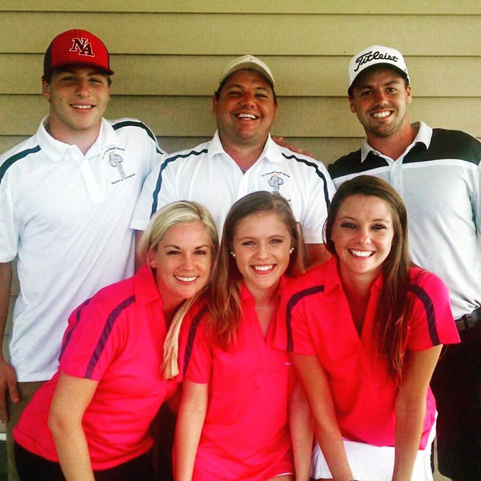
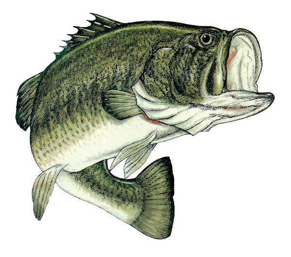
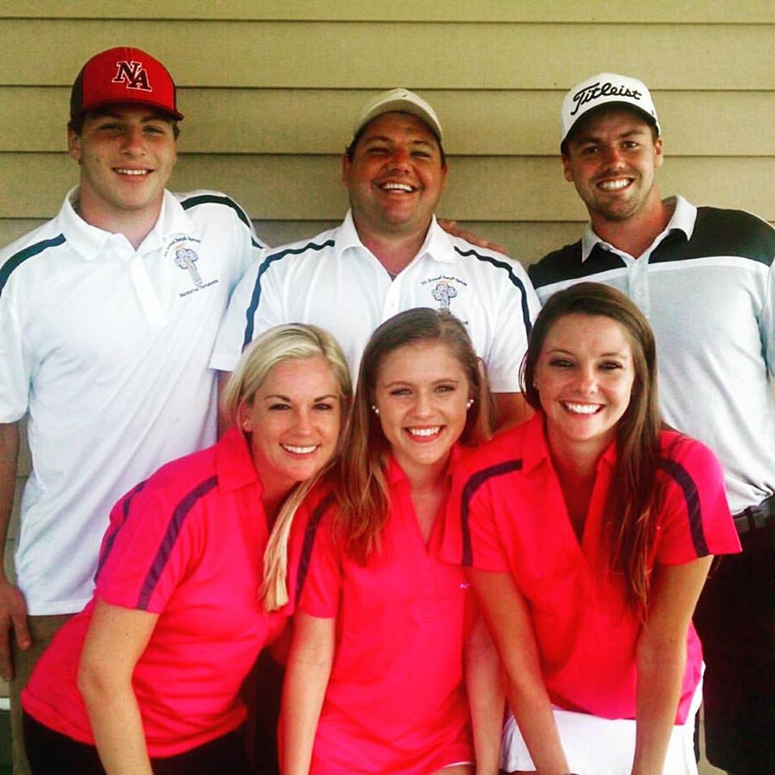
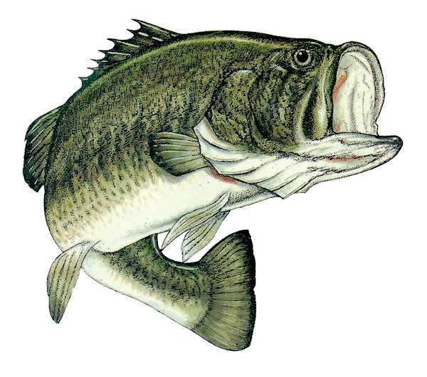
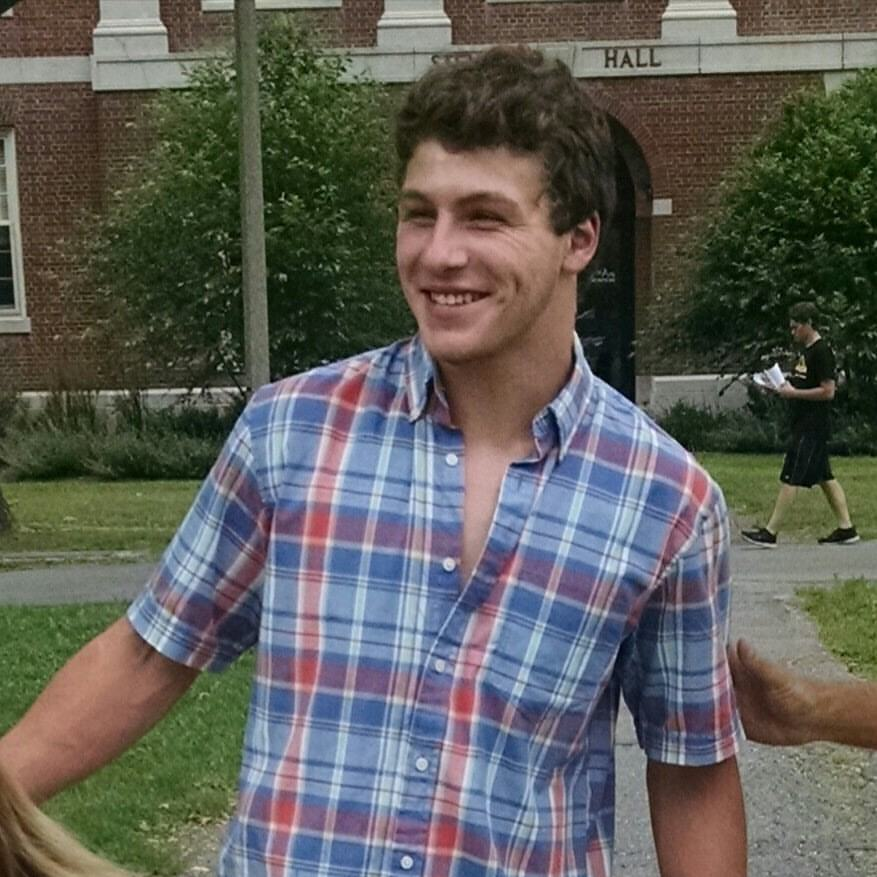
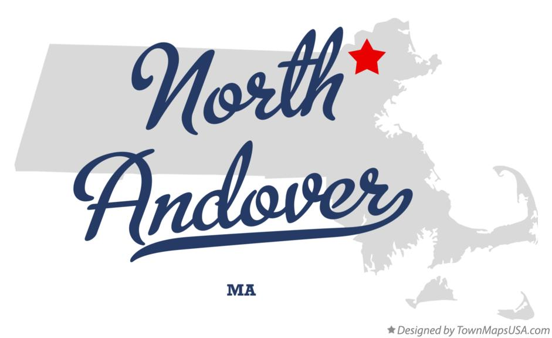
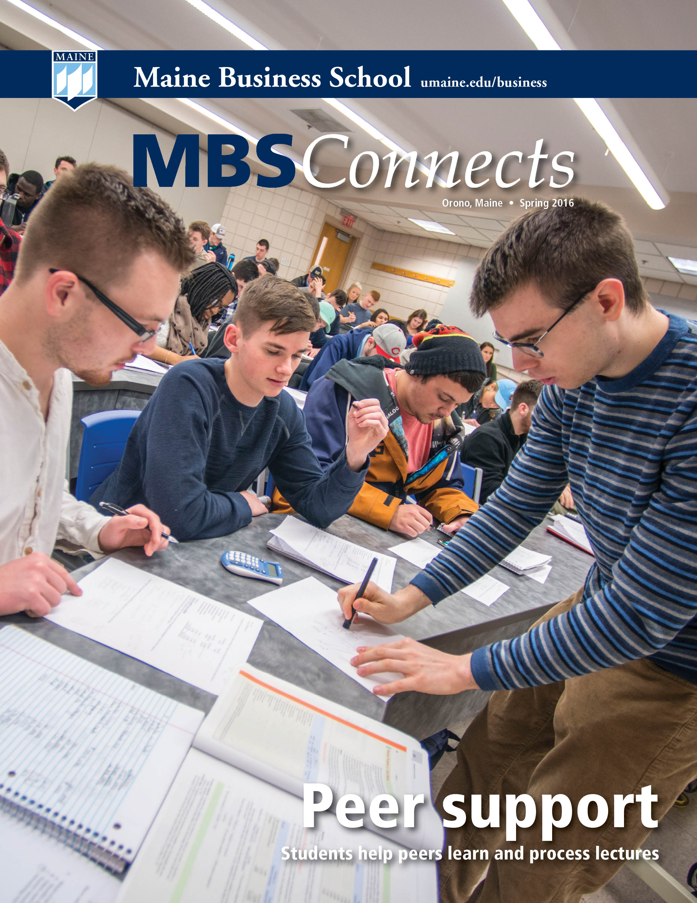

Life as a Blackbear My Family Hobbies
 



About Me

Hi everyone! My name is Kevin Angelo and I'm from a small in town in Northeast Massachusetts called North Andover. I decided to take my post-secondary studies to the University of Maine at Orono. I went from living in a small town where I knew pretty much everyone in my class to going to a school where I would only know two of the 2000 incoming freshman class. However, I was ready for the challenge. The purpose of this website is to show the world all about me and what I plan to accomplish in the future. I'm currently 18 years old and living on campus at the University of Maine. The reason that I came to the University of Maine was the price compared to the university's academics. At this wonderful school, I feel like I am getting the best education relative to its price. I am currently double majoring in Marketing and Finance with a concentration in Management Information Systems. I'm always up for a challenge and I figured why not take advantage of that attitude when it comes to my academics.


LinkedIn Facebook Twitter Resume Contact Me
 Homepage
Homepage